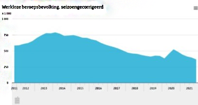

Sociale zekerheid
Welke initiatieven kan de regering nemen om mensen minder afhankelijk te maken van uitkeringen.
Meer buurtpleinen of ontmoetingsplekken creëren, om zo mensen te stimuleren elkaar te helpen. Door een fijne en gezellige plek te creëren met vrijwilligers of werkeloze mensen.Investeren in buurthuizen
Mensen stimuleren om dingen te organiseren om samen te eten Door de coronacrisis is het aantal werkelozen sterk toegenomen. Aan het begin van de Coronacrisis sterk en is het van 387 duizend toegenomen naar 528 duizend. Inmiddels is het weer gedaald naar 370 duizend. Dit is 3,8 procent van de beroepsbevolking. De regering is jaarlijks een hoop geld kwijt aan uitkeringen voor werkelozen. In plaats van dat deze mensen alleen maar thuis zitten, willen wij ze stimuleren om tot ze een nieuwe baan hebben gevonden vrijwilligers werk te doen in buurthuizen. Door minder geld uit te keren bespaard de regering geld om te investeren in buurthuizen. En om werkelozen die vrijwilligerswerk doen iets meer uit te keren dan mensen die thuis zitten. Als werkelozen zich in zetten voor de maatschappij in plaats van thuis te zitten zullen ze vrij weinig merken van de inkorting van de standaard uitkering. Voor mensen die werkeloos zijn vanwege medische redenen zullen deze nieuwe verdelingen echter niet gelden. Van het inkorten op uitkeringen en dit geld te investeren in buurthuizen zullen een hoop mensen profijt hebben.Werkelozen kunnen daar te recht als vrijwilliger, zo zitten ze niet thuis en helpen ze anderen door bijvoorbeeld activiteiten te organiseren voor kinderen. Zo kunnen ouders hun kinderen daar heen brengen in plaats van kinderopvangen. Waardoor ze minder kinderopvangtoeslag nodig hebben. Ook zal er gezocht moeten worden naar Vrijwilligers om in de avond voor een grote groep mensen eten te koken, zo worden de vrijwilligers beloond voor hun diensten door mee te kunnen eten en kunnen andere arme gezinnen en eenzame ouderen mee eten. Koken voor grote groepen is vaak in verhouding goedkoper. Door samen te werken met voedselbanken kan het nog goedkoper worden. Door de buurthuizen worden meer mensen in contact met elkaar gebracht. Zo doen mensen weer meer contacten op. Wat de kans om banen te vinden, om mensen te vinden die willen oppassen op hun kinderen en zo mensen afhankelijker maakt van elkaar en minder van uitkeringen. Ook zal het helpen in buurthuizen mensen met niet Nederlandse afkomst helpen om in een fijne omgeving de Nederlandse taal en cultuur te leren. Zo doen de mensen meer kennis op om mee te komen in de maatschappij en makkelijker de arbeidsmarkt in te stromen. Door de buurthuizen zullen er meer betaalde banen en vrijwilligerswerkmogelijkheden vrijkomen. Door een veilige plek te creëren met vrijwilligers waar mensen hun kinderen kwijt kunnen